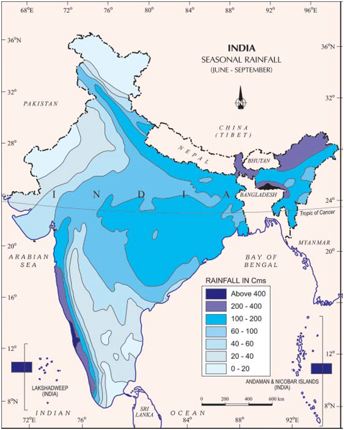

Climate of India
The climate of India is described as the ‘monsoon’ type.
In Asia, this type of climate is found mainly in the south and
the southeast. Despite an overall unity in the general pattern,
there are perceptible regional variations in climatic conditions
within the country. Let us take two important elements –
temperature and precipitation, and examine how they vary from
place to place and season to season.
Temperature
-
While in the summer the mercury occasionally touches 50°C+ in
the western Rajasthan, it drops down to as low as minus 45°C
in winter around Leh.
-
Churu in Rajasthan may record a temperature of 50°C or more on
a June day while the mercury hardly touches 19°C in Tawang
(Arunachal Pradesh) on the same day.
-
On a December night, temperature in Drass (Ladakh) may drop
down to minus 45°C while Thiruvananthapuram or Chennai on the
same night records 20°C or 22°C.
These examples confirm that there are seasonal variations in
temperature from place to place and from region to region in
India. Not only this, if we take only a single place and record
the temperature for just one day, variations are no less
striking. In Kerala and in the Andaman Islands, the difference
between day and night temperatures may be hardly seven or eight
degree Celsius. But in the Thar desert, if the day temperature
is around 50°C, at night, it may drop down considerably upto
15°-20°C.
In general, coastal areas experience less contrasts in
temperature conditions. Seasonal contrasts are more in the
interior of the country.
Precipitation
-
While snowfall occurs in the Himalayas, it only rains over the
rest of the country. Similarly, variations are noticeable not
only in the type of precipitation but also in its amount.
There is decrease in rainfall generally from east to west in
the Northern Plains.
-
Parts of western coast and northeastern India receive over
about 400 cm of rainfall annually. However, it is less than 60
cm in western Rajasthan and adjoining parts of Gujarat,
Haryana and Punjab. Rainfall is equally low in the interior of
the Deccan plateau, and east of the Sahyadris. A third area of
low precipitation is around Leh in Ladakh. The rest of the
country receives moderate rainfall.
-
While Cherrapunji and Mawsynram in the Khasi Hills of
Meghalaya receive rainfall over 1,080 cm in a year, Jaisalmer
in Rajasthan rarely gets more than 9 cm of rainfall during the
same period.
-
Tura situated in the Garo Hills of Meghalaya may receive an
amount of rainfall in a single day which is equal to 10 years
of rainfall at Jaisalmer.
-
The Ganga delta and the coastal plains of Odisha are hit by
strong rain-bearing storms almost every third or fifth day in
July and August while the Coromandal coast, a thousand km to
the south, goes generally dry during these months.
-
Most parts of the country get rainfall during June-September,
but on the coastal areas of Tamil Nadu, it rains in the
beginning of the winter season. In spite of these differences
and variations, the climate of India is monsoonal in rhythm
and character.

Weather is the momentary state of the atmosphere while climate
refers to the average of the weather conditions over a longer
period of time.
Factors Affecting India's Climate
Latitude: The Tropic of Cancer passes through the middle
of the country from the Rann of Kuchchh in the west to Mizoram
in the east. Almost half of the country, lying south of the
Tropic of Cancer, belongs to the tropical area. All the
remaining area, north of the Tropic, lies in the sub-tropics.
Therefore, India’s climate has characteristics of tropical as
well as subtropical climates.
The Himalayan Mountains: The lofty Himalayas in the north
provides an invincible shield to protect the subcontinent from
the cold northern winds. These cold and chilly winds originate
near the Arctic circle and blow across central and eastern Asia.
The Himalayas also trap the monsoon winds, forcing them to shed
their moisture within the subcontinent.
Distribution of Land and Water: India is flanked by the
Indian Ocean on three sides in the south and girdled by a high
and continuous mountain-wall in the north. As compared to the
landmass, water heats up or cools down slowly. This differential
heating of land and sea creates different air pressure zones in
different seasons in and around the Indian subcontinent.
Difference in air pressure causes reversal in the direction of
monsoon winds.
Altitude: Temperature decreases with height. Due to thin
air, places in the mountains are cooler than places on the
plains. For example, Agra and Darjeeling are located on the same
latitude, but temperature of January in Agra is 16°C whereas it
is only 4°C in Darjeeling .
Distance from the sea: Coastal regions experience less
contrast to changing climate, as they come under the moderating
influence of nearby seas. As the distance from the sea
increases, its influence decreases and the people experience
extreme weather conditions.
Relief: The physiography or relief of India also affects
the temperature, air pressure, direction and speed of wind and
the amount and distribution of rainfall. The windward sides of
Western Ghats and Assam receive high rainfall during
June-September whereas the southern plateau remains dry due to
its leeward situation along the Western Ghats.
Pressure and Winds: The climate and associated weather
conditions in India are governed by the following atmospheric
conditions:
-
Distribution of air pressure and winds on the surface of the
earth;
-
Upper air circulation caused by factors controlling global
weather and the inflow of different air masses and jet
streams;
-
Inflow of western cyclones generally known as disturbances
during the winter season and tropical depressions during the
south-west monsoon period into India, creating weather
conditions favourable to rainfall;
The Indian Monsoon
The climate of India is strongly influenced by monsoon winds.
The sailors who came to India in historic times were one of the
first to have noticed the phenomenon of the monsoon. They
benefited from the reversal of the wind system as they came by
sailing ships at the mercy of winds. The Arabs, who had also
come to India as traders named this seasonal reversal of
the wind system ‘monsoon’.
Indian Ocean Trade and The Monsoons
Historically, monsoon winds over Indian Ocean played a
significant role in aiding trade across the Ocean. So, if you
were a sailor, you could count on the wind to bring you from
Africa to India if you sailed between June and September, and
one that would bring you back to Africa if you sailed between
November and February. In fact, these winds were so
predictable that early maritime travel guides often listed
ideal times of departure down to the week and sometimes even
the day. Predictable winds like these, make trade a lot less
risky.
The Seasons
The monsoon type of climate is characterised by a distinct
seasonal pattern. The weather conditions greatly change from one
season to the other. These changes are particularly noticeable
in the interior parts of the country. The coastal areas do not
experience much variation in temperature though there is
variation in rainfall pattern.
There are four main seasons can be identified in India –
- the cold weather season,
- the hot weather season,
- the advancing/southwest monsoon season and
- the retreating monsoon season.
The Cold Weather Season (Winter)
-
The cold weather season begins from mid-November and stays
till February in northern India. December and January are the
coldest months in the northern part of India. The peninsular
region does not have a well-defined cold season. There is
hardly any noticeable seasonal change in temperature pattern
during winters due to the moderating influence of the sea.
-
The temperature decreases from south to the north. The average
temperature of Chennai, on the eastern coast, is between 24° –
25° Celsius, while in the northern plains, it ranges between
10°C and 15° Celsius.
-
Days are warm and nights are cold. Frost is common in the
north and the higher slopes of the Himalayas experience
snowfall. The weather is normally marked by clear sky, low
temperatures and low humidity and feeble, variable winds.
-
During this season, the northeast trade winds prevail over the
country. They blow from land to sea and hence, for most part
of the country, it is a dry season. Some amount of rainfall
occurs on the Tamil Nadu coast from these winds as, here they
blow from sea to land.
-
A characteristic feature of the cold weather season over the
northern plains is the inflow of cyclonic disturbances from
the west and the northwest. These low-pressure systems,
originate over the Mediterranean Sea and western Asia and move
into India, along with the westerly flow. They cause the
much-needed winter rains over the plains and snowfall in the
mountains. Although the total amount of winter rainfall
locally known as ‘mahawat’ is small, they are of immense
importance for the cultivation of ‘rabi’ crops.
The Hot Weather Season (Summer)
-
With the apparent northward movement of the sun towards the
Tropic of Cancer in March, temperatures start rising in north
India. From March to May, it is hot weather season in India.
-
In March, the highest temperature is about 38° Celsius,
recorded on the Deccan plateau. In April, temperatures in
Gujarat and Madhya Pradesh are around 42° Celsius. In May,
temperature of 45° Celsius is common in the northwestern parts
of the country. In peninsular India, temperatures remain lower
due to the moderating influence of the oceans.
-
The summer months experience rising temperature and falling
air pressure in the northern part of the country. Towards the
end of May, an elongated low-pressure area develops in the
region extending from the Thar Desert in the northwest to
Patna and Chotanagpur plateau in the east and southeast.
Circulation of air begins to set in around this trough.
-
A striking feature of the hot weather season is the ‘loo’.
These are strong, gusty, hot, dry winds blowing during the day
over the north and northwestern India. Sometimes they even
continue until late in the evening. Direct exposure to these
winds may even prove to be fatal.
-
Dust storms are very common during the month of May in
northern India. These storms bring temporary relief as they
lower the temperature and may bring light rain and cool
breeze. This is also the season for localised thunderstorms,
associated with violent winds, torrential downpours, often
accompanied by hail.
-
Towards the close of the summer season, pre-monsoon showers
are common especially, in Kerala and Karnataka. They help in
the early ripening of mangoes, and are often referred to as
‘mango showers’.
Advancing/Southwest monsoon Season (The Rainy Season)
-
By early June, the low-pressure condition over the northern
plains intensifies. It attracts, the trade winds of the
southern hemisphere. These south-east trade winds originate
over the warm subtropical areas of the southern oceans. They
cross the equator and blow in a south-westerly direction
entering the Indian peninsula as the south-west monsoon. As
these winds blow over warm oceans, they bring abundant
moisture to the subcontinent. These winds are strong and blow
at an average velocity of 30 km per hour.
-
With the exception of the extreme north-west, the monsoon
winds cover the country in about a month. The inflow of the
south-west monsoon into India brings about a total change in
the weather.
-
Early in the season, the windward side of the Western Ghats
receives very heavy rainfall, more than 250 cm. The Deccan
Plateau and parts of Madhya Pradesh also receive some amount
of rain in spite of lying in the rain shadow area. The maximum
rainfall of this season is received in the north-eastern part
of the country. Mawsynram in the southern ranges of the Khasi
Hills receives the highest average rainfall in the world.
Rainfall in the Ganga valley decreases from the east to the
west. Rajasthan and parts of Gujarat get scanty rainfall.
-
Another phenomenon associated with the monsoon is its tendency
to have ‘breaks’ in rainfall. Thus, it has wet and dry spells.
In other words, the monsoon rains take place only for a few
days at a time. They are interspersed with rainless intervals.
-
These breaks in monsoon are related to the movement of the
monsoon trough (low-pressure region). For various reasons, the
trough and its axis keep on moving northward or southward,
which determines the spatial distribution of rainfall.
-
When the axis of the monsoon trough lies over the plains,
rainfall is good in these parts.
-
On the other hand, whenever the axis shifts closer to the
Himalayas, there are longer dry spells in the plains, and
widespread rain occur in the mountainous catchment areas of
the Himalayan rivers. These heavy rains bring in their wake,
devastating floods causing damage to life and property in
the plains.
-
The frequency and intensity of tropical depressions too,
determine the amount and duration of monsoon rains. These
depressions form at the head of the Bay of Bengal and cross
over to the mainland. The depressions follow the axis of the
“monsoon trough of low pressure”.
-
The monsoon rain is known for its uncertainties. The
alternation of dry and wet spells vary in intensity, frequency
and duration. While it causes heavy floods in one part, it may
be responsible for droughts in the other. It is often
irregular in its arrival and its retreat. Hence, it sometimes
disturbs the farming schedule of millions of farmers all over
the country.
Retreating/Post Monsoons (The Transition Season)
-
During October-November, with the apparent movement of the sun
towards the south, the monsoon trough or the low-pressure
trough over the northern plains becomes weaker. This is
gradually replaced by a high-pressure system. The south-west
monsoon winds weaken and start withdrawing gradually.
-
By the beginning of October, the monsoon withdraws from the
Northern Plains. The months of October-November form a period
of transition from hot rainy season to dry winter conditions.
-
The retreat of the monsoon is marked by clear skies and rise
in temperature. While day temperatures are high, nights are
cool and pleasant. The land is still moist. Owing to the
conditions of high temperature and humidity, the weather
becomes rather oppressive during the day. This is commonly
known as ‘October heat’. In the second half of October, the
mercury begins to fall rapidly in northern India.
-
The low-pressure conditions, over north-western India, get
transferred to the Bay of Bengal by early November. This shift
is associated with the occurrence of cyclonic depressions,
which originate over the Andaman Sea. These cyclones generally
cross the eastern coasts of India cause heavy and widespread
rain. These tropical cyclones are often very destructive. The
thickly populated deltas of the Godavari, the Krishna and the
Kaveri are frequently struck by cyclones, which cause great
damage to life and property. Sometimes, these cyclones arrive
at the coasts of Odisha, West Bengal and Bangladesh. The bulk
of the rainfall of the Coromandel Coast is derived from
depressions and cyclones.